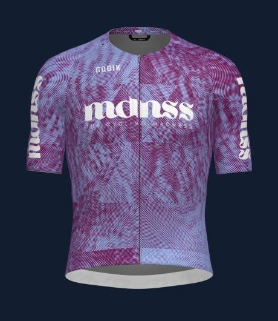

Mallorca Survival
Sábado 10 abril 2027 · Palma → Palma
Salimos de Palma antes del amanecer y damos la vuelta completa a la isla: la Tramuntana con las piernas frescas, el norte, la costa este y el sur llano de vuelta a Palma. Un día, una isla, todos juntos.
301,6 km alrededor de Mallorca
Arrastra para girar · pellizca para acercar
Perfil
Sentido horario. Tramuntana por la mañana, norte y costa este a mediodía, final llano por el sur hasta Palma.
Salida 06:30 desde Palma
Avituallamientos
4 paradas · 18 minPaso por los pueblos
Toca para ver en el mapaHoras orientativas: media en movimiento de toda la ruta, repartida por esfuerzo (100 m de subida cuentan como 1 km llano). Corte en Alcúdia a las 13:30: quien llegue más tarde vuelve directo a Palma por Inca, unos 55 km llanos.
Ida juntos, vuelta por libre
Ida · viernes 9 abril
Trasmed- 20:30Furgoneta en el puerto de Barcelona
- 21:30Ciclistas en el puerto, bicis a bordo
- 22:30Sale el ferry
- 05:30Llegada a Palma y desayuno
- 06:30Salida en bici
Vuelta · cada uno la suya
Reserva propia- Sábado noche · 21:30
GNV desde Palma. Vuelta directa, sin hotel. En el puerto antes de las 20:30.
- Domingo mañana · 11:30 → 20:00
Baleària desde Palma, con noche de hotel y cena de grupo opcional el sábado.
- Quedarse más días
Salidas de lunes a sábado por la mañana, entre las 10:30 y las 11:30.
Por confirmarHorarios del calendario vigente; los de abril de 2027 aún no están publicados.
Dónde y cuándo
Paradas
Llegar 20 min antes del grupo ALista de carga
Emergencias
Toda EspañaSi alguien abandona: sube a la furgoneta o vuelve en tren desde Inca, Sa Pobla o Manacor. Contacto de la organización: por añadir.
Survival × Gobik

← Arrastra para girar →
- Modelo
- Gobik CX, manga corta
- Diseño
- Edición Mallorca Survival 2027
- Estado
- Provisional · opción B, versión 1
- Precio
- Incluido en la inscripción
De 20 a 30 plazas
Incluye
- Ferry de ida Barcelona → Palma
- Desayuno en el puerto de Palma
- Cuatro avituallamientos en ruta
- Furgoneta de apoyo y transporte de bolsas
- Seguro de día
- Maillot del evento de Gobik
- No incluye: ferry de vuelta, hotel ni cenas. Cada uno lleva su bici.